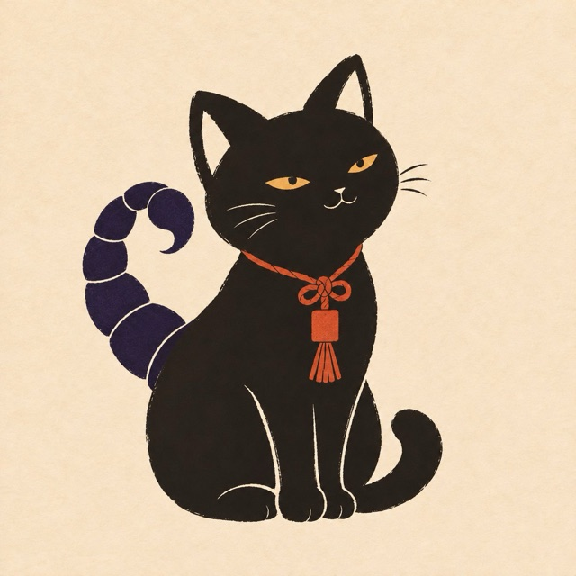

12星座中 7位

深
蠍座の2027年の一文字
2027年のあなたは、好きなことを「深める」一年。表面だけでなく、とことん掘り下げるあなたの力が、仕事でも人生でも評価されます。前半は社会的な場で注目を浴びそう。あなたの本気は、ちゃんと誰かに届いていますよ。
前半は、仕事や目標で大きな前進が。目上の人の応援も受けやすい時期です。
後半は、仲間や友人とのつながりが広がります。好きを共有できる人と出会えそう。
同じ蠍座でも、生まれた日・お名前によって、2027年に強く出る星は人それぞれ。くわしい鑑定では、生まれた日の星の配置を天文計算で徹底分析し、月ごとの運気の波、恋が動くタイミング、仕事でチャンスが来る月、お金の流れ、そしてあなたを一年守ってくれる一文字を……